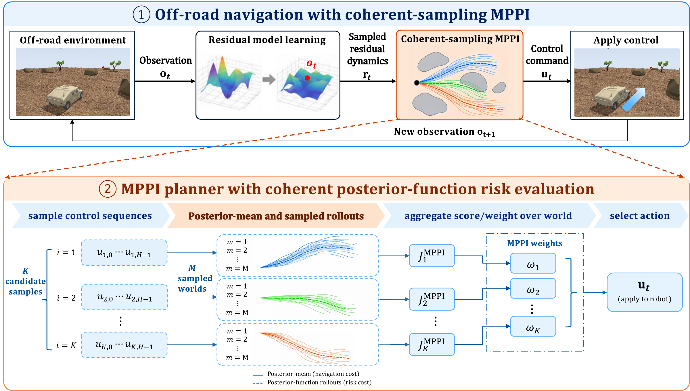
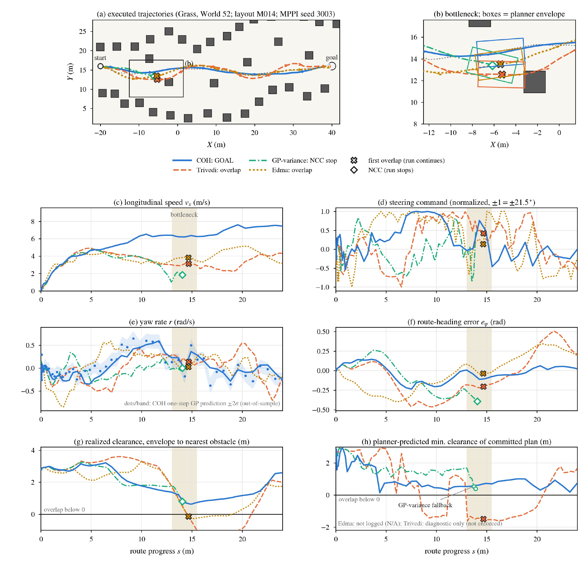

Research overview and abstract
Off-road obstacle avoidance requires collision-free progress despite uncertain terrain-dependent dynamics. Prediction errors may persist and accumulate over a maneuver. This work combines online Gaussian-process residual learning with risk-aware MPPI and coherent posterior-function sampling, evaluating trajectory-level obstacle-clearance shortfall by expectation or conditional value at risk (CVaR). Posterior-mean screening limits the candidates requiring sampled risk evaluation; fallback selection and final geometric collision checking address feasibility after MPPI weighting.
In high-fidelity simulations, the CVaR controller reached the goal without geometric overlap in 130 of 180 trials, versus 110 of 180 for the strongest independently configured baseline. A separate matched ablation compares coherent and stepwise-independent sampling.
Method overview

The GP learns residual dynamics online from observed transitions using passive updates. Each coherent posterior-function realization is held consistent across a predicted trajectory, preserving temporal dependence between model evaluations. Stepwise-independent sampling instead draws residuals independently at each prediction step.
For each sampled dynamics realization, the controller evaluates the largest obstacle-clearance shortfall along the trajectory. Expectation summarizes average shortfall; CVaR emphasizes the upper tail. Posterior-mean screening narrows the candidates for sampled risk evaluation. After MPPI weighting, a feasibility-aware selection uses fallback candidates and final geometric checks.
Main contributions
- Risk-aware MPPI with coherent GP posterior-function sampling for multi-step uncertainty propagation.
- Trajectory-level clearance risk combined with candidate screening and feasibility-aware action selection.
- Full-controller comparisons, a matched propagation ablation, and decision-level analyses.
Experimental results
High-fidelity off-road simulations evaluate 180 episodes per controller across Dirt, Grass and Concrete. Success requires reaching the goal within the time budget without geometric overlap. The complete controllers below are independently configured, so their comparison does not isolate a single component.
| Controller | Success | NCC / stop / overlap / timeout | Mean cycle time |
|---|---|---|---|
| Coherent CVaR | 130/180 (72.2%) | 38 / 10 / 2 / 0 | 68.6 ± 6.6 ms |
| Coherent expectation | 125/180 (69.4%) | 34 / 19 / 0 / 2 | 69.5 ± 8.1 ms |
| GP-variance | 81/180 (45.0%) | 23 / 76 / 0 / 0 | 44.1 ± 5.9 ms |
| Trivedi | 110/180 (61.1%) | 0 / 35 / 27 / 8 | 45.3 ± 4.2 ms |
| Edma | 73/180 (40.6%) | 0 / 29 / 78 / 0 | 103.2 ± 19.9 ms |
Manuscript Table III. NCC means no collision-free candidate among the evaluated sequences; it does not imply that no feasible trajectory exists. Times are mean ± standard deviation.
Matched sampling ablation
With matched architecture, data and controller settings, coherent versus independent sampling achieved 130 versus 118 successes under CVaR, and 125 versus 123 under expected shortfall (Table V). CVaR uses a 0 m preferred margin; expectation uses 0.3 m. The CVaR difference was primarily associated with fewer NCC terminations.


Supplementary Video
Video in preparation.
Paper and citation
Manuscript information is held for private review. A public paper link and publication citation can be added after release details are available.
@unpublished{aoki_risk_aware_mppi,
title={Risk-Aware Off-Road Obstacle Avoidance With Coherent Gaussian-Process Sampling},
author={Aoki, Nobuaki and Lee, Hojin and Sosnowski, Stefan and Hirche, Sandra},
note={Manuscript}
}